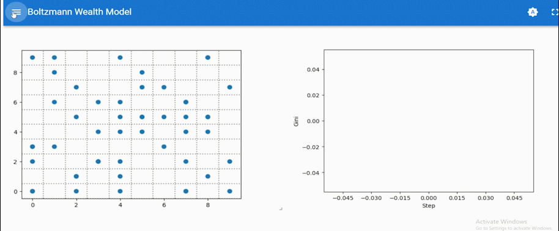

Landing Page Practicum Multi-agent Systems
Agent-based modeling using Netlogo and Python

Overview
Welcome to the landing page for the for the Practicum Multi-agent Systems 2025-2026. Every time the practicum starts you can keep this page open as a reference.
While the lectures focus on the theoretical background of multi-agent systems and gaining a better understanding how simple principles can percolate into complex behavior, the practicals focus on getting you ready to setting up your own data-generating agent based model.
Programming language of choice
We will use Netlogo and Python for this course. Most textbooks and high-quality learning materials teach agent-based modeling using Netlogo. Netlogo was designed to be an intuitive language to learn and reads almost as pseudocode. For this course we will however learn to build our own agent-based models using python, specifically we will make use of PyPi package Mesa (Kazil et al. 2020). Why? Well you know why! Python is becoming a standard language in the field of computer science and cognitive science, and you already have some familiarity with this language through previous programming course(s). It is good to learn more languages, but it is empowering to know one language well. Since you probably will be using python most during your studies, we have made the decision to have for each netlogo model a python version. We will run and refer the netlogo models as well, as our reference for translating things to python.
Note that if you prefer to use Netlogo for your group project, you are free to do so.
Additional Resources
We have a limited amount of time in this course. Therefore, we will not cover all the details of Netlogo and Mesa. But throughout this document we provide you with resources to learn further, help debug, and explore Netlogo and Mesa models. Sick of reading? Or need inspiration for your group project? Go to the inspiration section for lectures and podcasts that we enjoyed ourselves on these topics, and for a selection of recent publications where state-of-the art agent-based modeling is employed.
- Mesa API documentation: Mesa API
- Mesa overview: Tutorial
- Mesa video tutorials by Zak Jost: Swarm Intelligence and Agent Based Modeling
- Mesa core example model library
- Netlogo getting started tutorials
- Netlogo model library by (Wilensky and Rand 2015)
- Netlogo model library by (Romanowska et al. 2021)
Learning goals per practicum
- Setup: Install and configure NetLogo, Anaconda, Python Mesa, and VS Code.
- First run: Run all basic NetLogo and Mesa models (grid, continuous, network).
- Model library: Start your personal annotated model library.
- In class: Installing dependencies and error-handling.
- Coding style: Compare NetLogo and Python in the grid, continuous, and network models.
- Movement logic: Quiz questions on movement rules and torus wrapping.
- Extra models: Flocking and fire models as further reference.
- In class: Identify Mesa components by studying model code, and continue your notebook template.
- Crashcourse: Mesa’s key functionality via the full-functionality grid model.
- Pipeline: Data collection, Solara visualization, multi-iteration batch runs, data saving, post-hoc plotting.
- In class: Extend your notebook template with notes on Mesa’s optional components.
- Dispersal model: Introduction via the Africa Origin hypothesis.
- Deconstruction: Take apart agents, environment, and processes conceptually before translating.
- Translation Part I: Agent class, model class, grid setup. Checkpoint: agents report their position.
- In class: Start translating, working from the notebook template you already built.
- Translation Part II: Add Solara visualization with sliders.
- Agent hatching: Implement agent duplication based on dispersal rate.
- Verify: Run the model and check the behavior is what you expect.
- In class: Continue translating the model.
- Measurement: Add a DataCollector to measure e.g., percentage of grid occupied.
- Live plotting: Plot data as it comes in with
make_plot_component. - Complexify: Start working on the actual implementation of the more complex map-interfacing model.
- In class: Make meaningful adjustments while measuring their effects, and work with visualizations.
- Recap: Revisit the dispersal and diffusion model.
- Agent death: Implement removal with
self.remove(). - Design a measure: Spatial diffusion as variance in x and y coordinates.
- Creative adaptation: Tinker with the continuous and network models.
- Custom measures: Design and collect your own measure for each.
- In class: Plot results using DataCollector and
make_plot_component.
- Adaptive agents: How agents get memory and adapt.
- El Farol: Bounded rationality, adaptive strategy selection, emergent collective patterns.
- In class: Quiz questions on the prediction formula, strategy weights, and adaptive mechanics.
- New measure: Add prediction error to the El Farol DataCollector.
- Parameter sweeps: Batch runs with
mesa.batch_run, varying number of strategies (1/5/10/20) and memory length (1/5/10/20). - Reporting: Save results and find the combination with lowest median prediction error.
- In class: Code up parameter sweeps and data collection.
- Group projects: Overview of custom visualization resources.
- Agent-sets: Introduced via the Wolf-Sheep predator-prey model.
- Broad sweep: 100 steps, find settings where neither population goes extinct, assess how sheep-to-wolf ratio affects stability.
- In class: Code up parameter sweeps and start the data analysis.
- Deep sweep: 500 steps and 5 seeds on the best settings from 6a.
- Time series analysis: Plot population dynamics, measure oscillation peaks with
scipy.signal.find_peaks, assess periodicity. - Workflow: Discuss the ABM analysis workflow you can reuse in your group project.
- In class: Finish the analysis and visualization, plus Q&A.
- Practicum 7 (advanced): A practical introduction to (multi-agent) reinforcement learning.
Installation
NoteInstallation Section
NoteInstallation Guide Netlogo
You can download Netlogo from the official website: Netlogo Download. Just fill in your credentials and download the latest version of Netlogo.
Python, PyPi package Mesa, and installation
NoteInstallation guide python using anaconda + mesa
This installation I have tested on the practical machines and on a windows PC and Linux Laptop.
Install anaconda quick guide here.
Install Visual Studio Code from here (but feel free to use any other IDE you like, such as PyCharm, JupyterLab, etc.). Dont use jupyter notebook as your IDE as this will give issues when you try to run the Solara dashboards that python mesa makes use of.
After installing anaconda, you can install mesa using the following command in your terminal. Run each line seperately (so dont copy paste the entire block at once in your anaconda prompt):
Method 1
conda create -n mesa-env python=3.11
conda activate mesa-env
pip install "mesa[rec]==3.2.0"
pip install jupyter notebook scipy seaborn pandas altair ipykernel
pip install "solara==1.58.2" "solara-assets==1.58.2" "ipyvuetify<2" "ipyvue<2"Method 2
Download the environment.yml file here environment.yml and run the following command in your terminal:
conda env create -f environment.yml
conda activate mesa-envWe will use Visual Studio Code which has a built-in jupyter notebook viewer. We will do that as the default. Do note that you need to “trust” the notebook or the model folder when you open it for the first time (otherwise you get issues activating your environment). When you run your notebook chunks, make sure you select the right kernel (mesa-env).
WarningTroubleshooting
Most errors come from your python interpreter pointing to the wrong python. If you have multiple python installations, this is a common source of errors. Here is to properly connect visual studio code to your anaconda python installation:
- In Visual Studio Code, press
Ctrl + Shift + P - Type “Python: Select Interpreter”
- Select the python interpreter that is part of your anaconda installation (e.g.,
C:\Users\yourusername\anaconda3\python.exe) - Restart visual studio code and try again
From there you can also select your anaconda environments, like the one you just made (mesa-env).
If you still have issues, let me know and well troubleshoot.
Some basic differences in coding style
# This is a comment in Python - use # for single line comments
print("Hello, World!") # This prints a message to the console
# Variables - store data with descriptive names
my_variable = 42 # Integer (whole number)
name = "Agent" # String (text)
# Lists - collections of items in square brackets
my_list = [1, 2, 3, 4]
random_item = random.choice(my_list) # Pick random item from list# Import Mesa - the agent-based modeling framework
import mesa
from mesa.discrete_space import CellAgent, OrthogonalMooreGrid
# Define our agent class - inherits from CellAgent (built for grid movement)
class SimpleGridAgent(CellAgent):
def __init__(self, model, cell):
# Call parent class constructor - this sets up basic agent properties
super().__init__(model)
# Assign agent to a specific cell on the grid
self.cell = cell
# Define our model class - this manages the simulation
class SimpleGridModel(mesa.Model):
def __init__(self, width=20, height=20):
# Call parent class constructor - sets up basic model
super().__init__()
# Create grid: (width, height), wraps around edges, uses model's randomizer
self.grid = OrthogonalMooreGrid((width, height), torus=True, random=self.random)
# Create one agent and place it randomly on the grid
random_cell = self.random.choice(list(self.grid.all_cells.cells))
SimpleGridAgent(self, random_cell)# Import Mesa components for continuous (smooth) movement
import mesa
from mesa.experimental.continuous_space import ContinuousSpaceAgent, ContinuousSpace
import numpy as np # For mathematical operations and arrays
# Agent that can move smoothly in any direction
class SimpleAgent(ContinuousSpaceAgent):
def __init__(self, model, space, position=(0, 0), speed=1):
# Call parent constructor - sets up continuous space agent
super().__init__(space, model)
# Position as numpy array for easy math operations
self.position = np.array(position, dtype=float)
# How fast agent moves each step
self.speed = speed
# Generate random direction (angle between 0 and 2π radians)
angle = self.model.rng.uniform(0, 2 * np.pi)
# Convert angle to direction vector (x, y components)
self.direction = np.array([np.cos(angle), np.sin(angle)])
# Model for continuous space simulation
class SimpleModel(mesa.Model):
def __init__(self, width=100, height=100):
super().__init__()
# Create continuous space: [[x_min, x_max], [y_min, y_max]]
# torus=True means edges wrap around (like Pac-Man)
self.space = ContinuousSpace([[0, width], [0, height]],
torus=True, random=self.random)
# Create agent at random position within the space bounds
position = self.rng.random(2) * np.array([width, height])
agent = SimpleAgent(self, self.space, position)
# Add agent to model's agent collection
self.agents.add(agent)def step(self):
# Get current position
x, y = self.cell.coordinate
w, h = self.model.grid.dimensions
# Define possible moves: North, East, South, West
moves = [
(x, (y+1) % h), # North note modulo (%) functions as a wrap-around for toroidal grid
((x+1) % w, y), # East
(x, (y-1) % h), # South
((x-1) % w, y) # West
]
# Pick random direction and move there
new_x, new_y = self.random.choice(moves)
# Find the cell at new position
for cell in self.model.grid.all_cells.cells:
if cell.coordinate == (new_x, new_y):
self.cell = cell
break
# In the model
def step(self):
self.agents.do("step")def step(self):
"""Agent's step method - called every simulation tick"""
# Move forward in current direction
# position + (direction_vector * speed) = new_position
self.position += self.direction * self.speed
# In the model class
def step(self):
"""Model's step method - runs the simulation forward one tick"""
# Tell all agents to perform their step() method
self.agents.do("step")# Import Mesa components for grid-based modeling
import mesa
from mesa.discrete_space import CellAgent, OrthogonalMooreGrid
from mesa.visualization import SolaraViz, make_space_component
class SimpleGridAgent(CellAgent):
"""Agent that moves randomly on a discrete grid"""
def __init__(self, model, cell):
# Initialize parent CellAgent class
super().__init__(model)
# Assign agent to specific grid cell
self.cell = cell
def step(self):
"""Move to adjacent cell in cardinal direction (N, E, S, W)"""
# Get current position coordinates
x, y = self.cell.coordinate
w, h = self.model.grid.dimensions # Grid width and height
# Define possible moves: North, East, South, West
# Using modulo (%) for torus wrapping - edges connect to opposite side
moves = [
(x, (y+1) % h), # North - move up, wrap to bottom if at top
((x+1) % w, y), # East - move right, wrap to left if at right edge
(x, (y-1) % h), # South - move down, wrap to top if at bottom
((x-1) % w, y) # West - move left, wrap to right if at left edge
]
# Pick random direction from available moves
new_x, new_y = self.random.choice(moves)
# Find the cell object at the new position
# (Grid stores cells, we need the cell object, not just coordinates)
for cell in self.model.grid.all_cells.cells:
if cell.coordinate == (new_x, new_y):
self.cell = cell # Move agent to new cell
break # Stop searching once found
class SimpleGridModel(mesa.Model):
"""Model with discrete grid and one moving agent"""
def __init__(self, width=20, height=20):
super().__init__()
# Create orthogonal grid (4-connected, not diagonal)
# torus=True means edges wrap around
self.grid = OrthogonalMooreGrid((width, height), torus=True, random=self.random)
# Create one agent and place it randomly
random_cell = self.random.choice(list(self.grid.all_cells.cells))
SimpleGridAgent(self, random_cell)
def step(self):
"""Run one simulation step - all agents act"""
self.agents.do("step") # Tell all agents to perform their step
# Visualization function - defines how agents look on screen
def agent_portrayal(agent):
"""Draw agent as red circle"""
return {"color": "#FF0000", "size": 0.5} # Red color, small size
# Create model and set up visualization
model = SimpleGridModel()
page = SolaraViz(model, [make_space_component(agent_portrayal=agent_portrayal)],
name="Grid Agent")# Import all necessary libraries
import numpy as np # For mathematical operations
import mesa # Main ABM framework
from mesa.experimental.continuous_space import ContinuousSpaceAgent, ContinuousSpace
from mesa.visualization import SolaraViz, make_space_component
from matplotlib.markers import MarkerStyle # For arrow visualization
class SimpleAgent(ContinuousSpaceAgent):
"""An agent that moves smoothly through continuous space"""
def __init__(self, model, space, position=(0, 0), speed=1):
# Initialize parent class
super().__init__(space, model)
# Store position as numpy array for vector math
self.position = np.array(position, dtype=float)
self.speed = speed
# Generate random starting direction
angle = self.model.rng.uniform(0, 2 * np.pi) # Random angle in radians
# Convert angle to unit vector (direction with length 1)
self.direction = np.array([np.cos(angle), np.sin(angle)])
def step(self):
"""Move agent forward in its current direction"""
# Vector addition: new_position = old_position + (direction * speed)
self.position += self.direction * self.speed
class SimpleModel(mesa.Model):
"""Model containing agents in continuous space"""
def __init__(self, width=100, height=100):
super().__init__()
# Create 2D continuous space with specified dimensions
self.space = ContinuousSpace([[0, width], [0, height]],
torus=True, random=self.random)
# Create single agent at random starting position
position = self.rng.random(2) * np.array([width, height])
agent = SimpleAgent(self, self.space, position)
self.agents.add(agent)
def step(self):
"""Advance simulation by one time step"""
self.agents.do("step")
# Visualization function - defines how agents appear
def agent_draw(agent):
"""Draw agent as arrow pointing in movement direction"""
# Calculate angle from direction vector
angle_rad = np.arctan2(agent.direction[1], agent.direction[0]) # y, x for correct angle
angle_deg = np.degrees(angle_rad) # Convert to degrees for marker
# Create arrow marker and rotate it to show direction
marker = MarkerStyle(marker='>') # Right-pointing arrow
marker._transform = marker.get_transform().rotate_deg(angle_deg)
# Return visualization properties
return {"color": "blue", "size": 15, "marker": marker}
# Create and run the simulation
model = SimpleModel()
page = SolaraViz(model, [make_space_component(agent_portrayal=agent_draw,
backend="matplotlib")], name="Continuous Agent");; This is a comment in NetLogo - use semicolons
print "Hello, World!" ;; This prints a message when run in the command center
;; Variables - NetLogo has different ways to create variables
let my-variable 42 ;; Local variable (exists only in this procedure)
set name "Agent" ;; Set a global or existing variable
;; Lists - collections of items in square brackets
let my-list [1 2 3 4]
let random-item one-of my-list ;; Pick random item from listto setup
clear-all ;; Clear the world and reset everything
color-grid ;; Call our custom procedure to color patches
create-turtles 1 [ ;; Create 1 turtle (agent)
set size 1.5 ;; Make turtle visible
setxy random-pxcor random-pycor ;; Random patch coordinates (integers)
set color green ;; Color the turtle green
]
reset-ticks ;; Reset the tick counter to 0
end
to color-grid
ask patches [ ;; Tell every patch to do the following:
;; Create checkerboard pattern: if sum of coordinates is even, color white
if (pxcor + pycor) mod 2 = 0 [ set pcolor white ]
;; Patches default to black, so odd sums stay black
]
endto setup
clear-all ;; Clear everything and start fresh
create-turtles 1 [ ;; Create 1 turtle (agent)
set size 3 ;; Make turtle bigger and visible
setxy random-xcor random-ycor ;; Random float coordinates anywhere
set heading random 360 ;; Random direction (0-359 degrees)
]
reset-ticks ;; Reset simulation time to 0
endto go
ask turtles [ ;; Tell all turtles to:
let direction one-of [0 90 180 270] ;; Pick random cardinal direction
;; 0=North, 90=East, 180=South, 270=West
set heading direction ;; Face that direction
fd 1 ;; Move forward 1 patch
]
tick ;; Advance time by 1 tick
endto go
ask turtles [ ;; Tell all turtles to:
forward 1 ;; Move forward 1 unit in current direction
;; Turtle keeps same heading, just moves forward smoothly
]
tick ;; Advance simulation time by 1 tick
end;; Complete NetLogo model for grid-based random walk
to setup
clear-all ;; Reset the world
color-grid ;; Create checkerboard pattern
create-turtles 1 [ ;; Create single agent
set size 1.5 ;; Make agent visible
setxy random-pxcor random-pycor ;; Place on random patch (grid cell)
set color green ;; Color it green
]
reset-ticks ;; Start time counter at 0
end
to color-grid
ask patches [ ;; For every patch (grid cell):
;; Create alternating pattern based on coordinate sum
if (pxcor + pycor) mod 2 = 0 [
set pcolor white ;; Even sum = white patch
]
;; Odd sum patches stay default black
]
end
to go
ask turtles [ ;; Each turtle does:
let direction one-of [0 90 180 270] ;; Pick random cardinal direction
set heading direction ;; Turn to face that direction
fd 1 ;; Move forward 1 patch
]
tick ;; Increment time counter
end;; Complete NetLogo model for continuous space movement
to setup
clear-all ;; Reset simulation
create-turtles 1 [ ;; Create single agent
set size 3 ;; Make turtle large and visible
setxy random-xcor random-ycor ;; Random position (any x,y coordinates)
set heading random 360 ;; Random initial direction (0-359 degrees)
]
reset-ticks ;; Start time at 0
end
to go
ask turtles [ ;; Each turtle:
forward 1 ;; Move forward 1 unit in current heading
;; Agent moves smoothly - can be at any decimal coordinates like (15.7, 23.2)
]
tick ;; Advance time by 1 step
endModel library for this course
Note we have stored the models in a .zip file. You can download the models and extract them (otherwise look up how to on the web).
NoteBasic models
NoteCustom visualizations example models
Examples of models with custom space and plot visualizations (e.g., creating animations without solara).
NoteFull functionality grid model
NoteDispersal model and DIY
NoteCriticality Fire model
NoteFlocking model
NoteEl Farol Model
NoteAmphor Model
- TODO Python
- Amphor Model Folder Netlogo
Slides
NoteSlides practicum 1a
NoteSlides Practicum 1b
NoteSlides Practicum 2a
NoteSlides Practicum 2b
NoteSlides Practicum 3a
NoteSlides Practicum 3b
NoteSlides practicum 4a
NoteSlides Practicum 4b
NoteSlides Practicum 5a
NoteSlides Practicum 5b
NoteSlides Practicum 6a
NoteSlides Practicum 6b
Key background literature for the models
NoteMaterials for basic models
For understanding the structure of the python mesa base models, you can can have a look at the their tutorial by (Kazil et al. 2020).
For Netlogo: Chapter 1 (Romanowska et al. 2021)
This book chapter goes into the some basics of netlogo that is helpful for getting started with the base models.
NoteBook chapter about dispersal model
Chapter 1 (Romanowska et al. 2021)
This book chapter goes into the dispersal model
NoteBook chapter about fire model
Chapter 3 (Wilensky and Rand 2015)
This book chapter goes into the fire model
NoteBook chapter about el farol model
Chapter 3 (Wilensky and Rand 2015)
This book chapter goes into the el farol model
NoteBook chapters about flocking model
NoteBook chapters about wolf-sheep model
Chapter 4 (Wilensky and Rand 2015)
This book chapter goes into the wolf sheep model
NoteBook chapter about amphor model
Chapter 6 (Romanowska et al. 2021)
This book chapter goes into the amphor model
Live exercises
Every Mesa model you will read this course is written as a set of classes. If class syntax is unfamiliar you might have difficulty reading the code. These four exercises are about reading that python syntax, not about agent-based modeling yet.
A class is a template that you can reuse and summon instances of. Making an instance from it gives you one object with its own copy of the attributes. self is whichever instance the method is currently running on (you can imagine each instance having a self).
Run this and note that a and b have separate names.
Now it is your turn. Add a third agent called c with the name “turtle-2” and have it greet. Then predict, before running, what a.name prints after you add the line a.name = "renamed".
TipHint
You make an instance by calling the class like a function: c = Agent(...). Changing a.name touches only a, because each instance holds its own attributes.
__init__ runs once, when the instance is made, and sets up what the object knows. Other methods are things it can do later.
Fill the two gaps so the sheep has an energy attribute and an eat method that adds 5. It should print 15.
TipHint
The name you store under is the name you read back later. To add in place, use +=.
Mesa agents almost always have one method that calls several others. This is the shape you will see everywhere: a step that delegates.
Complete step so the sheep first moves and then eats. It should print moved, ate, and then 13.
TipHint
Inside a method, other methods on the same object are reached through self, and you still need the brackets to actually call them. Leave the brackets off and nothing happens.
A model holds a collection of agents and tells all of them to act. In Mesa that is self.agents.do("step"). Underneath, it is just a loop.
Make ten sheep with random starting energy, step each one, then print how many have energy above 12.
TipHint
The loop body calls the method on the loop variable. For the count, the condition compares each sheep’s energy attribute against 12.
When you write class SimpleGridAgent(CellAgent) your class inherits from CellAgent. The parent’s __init__ does bookkeeping: registering the agent with the model, handing out a unique id, attaching a random generator. Writing your own __init__ overwrites it. However, when we use super().__init__(...) we can run the parent’s version first so that we get to inherit those settings.
Run this, then comment out the super() line and run it again. What error do you get, and why?
TipHint
Read the error message carefully. Which attribute is missing, and which class was supposed to create it?
In exercise 1 leaving out super() gave you an error. But what if you leave it out in a model that does not use the missing attribute? The model will run, but the agent will never be asked to act.
In mesa, super().__init__(model) is what registers the agent into model.agents, and that collection is what self.agents.do("step") loops over. An agent that never registers still exists, still has a fine step method, but it is just never asked to do anything. Nothing will crashe, but your model simply has fewer agents than you think.
Predict the three numbers before you run this.
Now fix LoneAgent so it joins the model and both agents act three times.
TipHint
One line at the top of LoneAgent.__init__. Note that a missing super() can be a silent bug, not a crash, so get in the habit of printing len(self.agents) after setup. In fact get in the habit of printing certain dynamic variables in general.
Agents do things. Here is a very small model where local action produces a global pattern.
Forty cells of road, bent into a ring (so the end is connected to the start), with twenty-four cars on it. Each car follows one rule: move forward one cell if the cell ahead is free, otherwise stay put. This generates a traffic jam, which is a block of cars that cannot move because they are all blocked by the car in front of them. It is the simplest emergent, which means a global pattern that arises from simple local rules.
Fill in the one gap and run it and assess what happens.
Two things to look at:
- Follow the block of
CCCCdown the rows. Every car in it is trying to go right, and the block itself travels left, one cell per tick. That is a traffic jam! We have simulated a traffic jam! The rest of the road settles intoC.C.C.where everybody moves every tick. - Lower
n_carsto 12 and run again (add an input to an argument that belongs toRoad()). You will see that there are no jams. So somewhere in between is a density where the road tips from flowing to jamming (which is the same kind of tipping point you will meet as critical density in the fire model; the beauty of critical values).
You need to become literate in reading model code in this course. The fire model from python mesa was still perhaps complex at first glance. Lets start even simpler. Remember, that the fire model has one kind of agent, a tree, and the tree is a state machine with three states: "Fine", "On Fire", "Burned Out". Below is a very small version of it, with a row of trees instead of a grid. The fire spreads to neighbours, and the tree that is on fire burns out.
Then:
- Put a space in the middle of
ground, so"TTTTT TTTTTT", and run again. The fire stops dead. Fire needs a connected path, and how likely that path is depends on how full the forest is. That is what the density parameter does in the real model.
TipHint
Both gaps are one of the three condition names defined on the first line.
Mesa’s DataCollector is quite simple. The DataCollector is called at every step, and batch_run is a loop inside a loop (but with parralelization). You could of course code up such a thing by hand. Run this first.
In the fullfunc notebook, maxdistance(model) is a plain function that takes the model and returns one number. Mesa just calls it this reporter function for you.
Write spread, returning the distance between the leftmost and rightmost agent.
TipHint
The widest gap in a list of numbers is the largest minus the smallest.
A DataCollector calls the reporter every step and appends the result to a growing table. Do that by hand. You should get 21 numbers: one from setup, plus one per step.
TipHint
The line in the loop is the simlar as the one above it, appending after each step instead.
In Mesa calling the spread function via the DataCollector looks like this: mesa.DataCollector(model_reporters={"spread": spread}) plus self.datacollector.collect(self) at the end of step.
One run tells you little about your typical model dynamics. Different seeds will give different starting positions. batch_run runs every parameter setting several times. Handcoded it would look something like this: outer loop over parameters, inner loop over seeds. Fill in both. You want 15 rows of result data.
Note in Mesa this would like look: mesa.batch_run(Model, parameters={"numagents": (2, 5, 10)}, iterations=5, max_steps=20). Same three nested things, as keyword arguments.
The dispersal model has agents that do one thing: now and then they make a copy of themselves in a neighbouring cell. These excercises should help generate intutitions for how to implement it in mesa.
Same shape as practicum 1b. BaseAgent stands in for mesa’s CellAgent, and super().__init__(model) is what puts the new agent in model.agents. An agent hatches a copy of itself with probability growth_rate, every step. Fill in the gap.
Note that the hatching agent never touches model.agents itself. It just makes an instance, and super() does the joining. Take the super() line out and the population stays at five forever, which is the silent bug you might get when failing to inherit from the parent calss.
Note also that growth_rate is per agent per step, so the population does not grow by a fixed amount but by a fixed proportion. Set it to 0.3 and look at the last number.
TipHint
You can call an agent within the agent class. The new agent is created by calling the class constructor (the class constructor your in, which might be a bit confusing) with the appropriate arguments.
An agent cannot hatch just anywhere. The new one goes in a neighbouring cell that is free, and in the full model there is water where nobody can live. Fill in the filter.
You should get three free cells. In the real model these two lines are the same idea:
empty_cells = [cell for cell in neighbours if len(cell.agents) == 0]
empty_cells = [cell for cell in empty_cells if binary_matrix[cell.coordinate[1], cell.coordinate[0]] == 1]
TipHint
Two conditions joined with and, both of them a not in.
No excercises for this practicum. But make sure to catch up, and repeat doing these excercises.
Today you add a measurement to the dispersal model, and you prepare for the world map version, where the world wraps left-right but not top-bottom.
Here is a tiny world map. L is empty land, A is land with an agent on it, ~ is water. Write the measure: what percent of the land is occupied? It should print 43.75.
Why do we divide by the land and not by the whole grid?
Reminder. In Mesa the same idea is a reporter function that gets the model, like maxdistance in the fullfunc model:
def percent_occupied(model):
n_cells = len(model.grid.all_cells.cells)
return 100 * len(model.agents) / n_cells
# in __init__
self.datacollector = mesa.DataCollector(model_reporters={"PercentOccupied": percent_occupied})
# at the end of step
self.datacollector.collect(self)
# in SolaraViz
make_plot_component("PercentOccupied")Mesa gives you torus=True (wrap in both directions) or torus=False (no wrapping). But what if you need a horizontal warpping? You can code this in yourself of course, with modulo (%).
First see what modulo does. Predict each number, then run.
Now use it. Fill in the one gap so that x wraps around.
Predict before you run: how many neighbours for each? You should get 8, 8 and 5. Check that the cell on the west edge (0, 1) has neighbours with x = 5, on the other side of the map.
In Mesa you would make the grid with torus=False, compute the coordinates with this function instead, and get the specific cell from the model like so self.model.grid[(nx, ny)].
Next weeks we will do El Farol: 100 people, one bar, and the bar is only worth to go to if it is not too crowded. Here is the same idea with just two agents. Ana and Ben like the same tiny bar, but it only fits one person. They cannot talk to each other over who goes. Every week each of them predicts what the other will do, and only goes if they think the other stays home.
Their prediction rule is simple: “the other will do what they did last week.”
Fill in the decision and run.
Things to try and think about:
- Last week both went. What happens now, and why are they wrong every single week?
- Change the start so that only Ana went last week (
Friend("Ben", False)). Now it works, but is it fair to Ben? - Go back to both going last week, but give Ben a different rule:
Friend("Ben", True, rule="opposite"). Does it help? - In the real El Farol model, every agent has several rules and switches to the one that predicted best recently. Why might that help here?
TBA
TBA
TBA
TBA
TBA
TBA
TBA
TBA
TBA
TBA
TBA
TBA
Inspiration section
Additional Multimedia Resources
- Emergent phenomena from sorting algorithms (with Michael Levin)
- Youtube video Cellular automata called Lenia
- Santa Fe Complexity Podcast: The physics of collectives
- BJKS podcast: Paul Smaldino on ABM Modeling of Social Behavior
- Braininspired podcast: David Krakauer on how to think like a complexity scientist
- Interacting Minds Seminar: Marieke Woensdregt on ABM and language learning
- Carlos Gershenson on the Slower is Faster Effect
Research papers on modeling or patterns ripe for ABM modeling
- “Agnosiophobia in a virtual agent: behavioral and dynamical architecture in Lenia” (download PDF)
- “Allocentric flocking” (download PDF) (Salahshour and Couzin 2025)
- “An agent-based model of citation behavior” (Chacko et al. 2025) (download PDF)
- “Evolving general cooperation with a Bayesian theory of mind” (Kleiman-Weiner et al. 2025) (download PDF)
- “Evolution of foraging behaviour induces variable complexity-stability relationships in mutualist-exploiter-predator communities” (Wang et al. 2025) (download PDF)
- “Diffusion of complex contagions is shaped by a trade-off between reach and reinforcement” (Wan et al. 2025) (download PDF)
- “Reciprocity evolves more readily in competitive than cooperative socio-ecologies” (Romano et al. 2025) (download PDF)
- “An evolutionary model of rhythmic accelerando in animal vocal signalling” (Jadoul et al. 2025) (download PDF)
- “Modeling Multi-Agent Self-Organization through the Lens of Higher Order Attractor Dynamics” (Butner et al. 2017) (download PDF)
Student model library section
Upload/push your project model to gitlab.uvt.nl/ or github.com, set it to public, and share the link here for others to see and use. Make sure you have a nice README file that explains what your model does and provide a citation, perhaps some contact information.
Forthcoming student model library with models created by students during the course.
Practical recordings
You can watch the recordings here if you are logged into edge browser with your account. Otherwise just follow the panopto link and log in with your credentials. Remember Please enjoy the online recordings, but if no one as a consequence shows up I might decide to stop recording.
NoteRecording Practicum 1a
NoteRecording Practicum 1b
NoteRecording Practicum 2a
NoteRecording Practicum 2b
NoteRecording Practicum 3a
References
References
Butner, Jonathan E., Travis J. Wiltshire, and A. K. Munion. 2017. “Modeling Multi-Agent Self-Organization Through the Lens of Higher Order Attractor Dynamics.” Frontiers in Psychology 8 (March). https://doi.org/10.3389/fpsyg.2017.00380.
Chacko, George, Minhyuk Park, Vikram Ramavarapu, Ananth Grama, Pablo Robles-Granda, and Tandy Warnow. 2025. An Agent-based Model of Citation Behavior. arXiv:2503.06579. arXiv. https://doi.org/10.48550/arXiv.2503.06579.
Jadoul, Yannick, Taylor A. Hersh, Elias Fernández Domingos, Marco Gamba, Livio Favaro, and Andrea Ravignani. 2025. “An Evolutionary Model of Rhythmic Accelerando in Animal Vocal Signalling.” PLoS Computational Biology 21 (4): e1013011.
Kazil, Jackie, David Masad, and Andrew Crooks. 2020. “Utilizing Python for Agent-Based Modeling: The Mesa Framework.” In Social, Cultural, and Behavioral Modeling, edited by Robert Thomson, Halil Bisgin, Christopher Dancy, Ayaz Hyder, and Muhammad Hussain. Springer International Publishing. https://doi.org/10.1007/978-3-030-61255-9_30.
Kleiman-Weiner, Max, Alejandro Vientós, David G. Rand, and Joshua B. Tenenbaum. 2025. “Evolving General Cooperation with a Bayesian Theory of Mind.” Proceedings of the National Academy of Sciences 122 (25): e2400993122. https://doi.org/10.1073/pnas.2400993122.
Romano, Angelo, Ali Seyhun Saral, and Carsten K. W. De Dreu. 2025. “Reciprocity Evolves More Readily in Competitive Than Cooperative Socio-Ecologies.” Proceedings of the Royal Society B: Biological Sciences 292 (2050): 20250973. https://doi.org/10.1098/rspb.2025.0973.
Romanowska, Iza, Colin D. Wren, and Stefani A. Crabtree. 2021. Agent-Based Modeling for Archaeology: Simulating the Complexity of Societies. The SFI Press Scholar Series.
Salahshour, Mohammad, and Iain D. Couzin. 2025. “Allocentric Flocking.” Nature Communications 16 (1): 9051. https://doi.org/10.1038/s41467-025-64676-5.
Smaldino, Paul E. 2023. Modeling Social Behavior Princeton University Press. Princeton University Press.
Wan, Allison, Christoph Riedl, and David Lazer. 2025. “Diffusion of Complex Contagions Is Shaped by a Trade-Off Between Reach and Reinforcement.” Proceedings of the National Academy of Sciences 122 (28): e2422892122. https://doi.org/10.1073/pnas.2422892122.
Wang, Lin, Ting Wang, Xiao-Wei Zhang, et al. 2025. “Evolution of Foraging Behaviour Induces Variable Complexity-Stability Relationships in Mutualist-Exploiter-Predator Communities.” PLOS Computational Biology 21 (7): e1013245. https://doi.org/10.1371/journal.pcbi.1013245.
Wilensky, Uri, and W. Rand. 2015. An Introduction to Agent-Based Modeling. MIT Press.